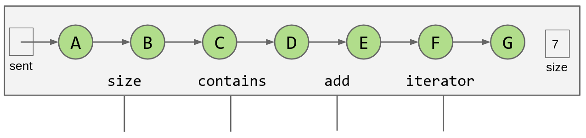
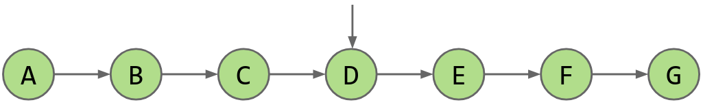
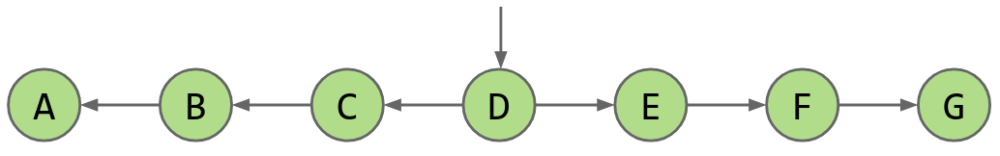
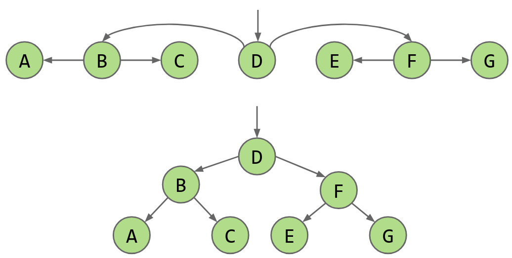
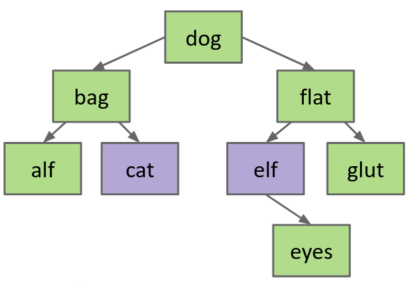
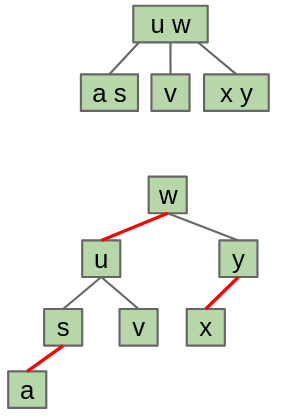

Binary Search Trees
Table of Contents
1. Derivation
We can start from an OrderedLinkedListSet, then make it better:

Here, the runtime of contains and add is both \(\Theta (N)\), which is not very efficient. The fundamental problem is that searching through the list is slow, even though the elements are in order. Maybe we can take some inspiration from binary search.
We can first move the pointer to the middle, but now we can’t reach elements before it:

We can fix this by flipping the links before the pointer to the left:

We’ve now halved our search time, but it still grows linearly with respect to \(N\). What we can do is apply the optimization recursively in each half of the list:

2. Binary Search Tree
A binary search tree is a rooted binary tree such that for every node \(X\) in the tree, it has the following two properties:
- Every key in the left subtree is less than the key of \(X\)
- Every key in the right subtree is greater than the key of \(X\)
The ordering of a BST must be complete, transitive, and antisymmetric. In other words, given keys \(p\) and \(q\):
- Exactly one of \(p < q\) and \(q < p\) must be true
- \(p < q \land q < r \Rightarrow p < r\)
2.1. contains
To find a key in a BST, we do the following:
- If
searchKeyequalsT.key, return - Otherwise:
- If
searchKey < T.key, searchT.leftrecursively - If
searchKey > T.key, searchT.rightrecursively
- If
Additionally, we see that the runtime to complete a search on a BST is proportional to the height of the tree. In the worst case, the height of a BST is \(\log N\), so completing a search on a BST takes \(\Theta (\log N)\) time.
2.2. insert
To insert a key into a BST, we do the following:
- Search for the key
- If the key is found, do nothing and return
- Otherwise:
- Create a new node
- Set the appropriate link
2.3. delete
Deleting from a BST has three cases:
- Deletion key has no children
- Deletion key has one child
- Deletion key has two children
If the deletion key has no children, we can just sever the parent’s link. The deleted node will be garbage collected by Java.
If the deletion key has just one child, we can move the parent’s link to point to the child. This still preserves the properties of the BST, and also skips over the node we want to delete.
The hardest case is when the deletion key has two children. The strategy is to find a new root node that replaces the deletion key and also satisfies the BST properties. To do so, we can either choose a target node to be the predecessor (the next smaller key), or the successor (the next larger key):

Now, deleting this target node and then replacing the deletion key with this target node effectively deletes the deletion key. This process is known as Hibbard deletion.
3. Tree Rotation
The problem with binary search trees is that we need to keep them balanced, otherwise the performance drops.
The key is tree rotation. By rotating trees, it is possible to move a BST to a balanced configuration. In general, if \(x\) is the right child of \(G\), we make \(G\) the new left child of \(x\). Then, since \(x\) has “two” left childs and \(G\) has no right child anymore, we can just make the original left child of \(x\) the new right child of \(G\).
The above operation is called rotateLeft(G). There is also a corresponding rotateRight(G), which is the mirror image:
Note that if there is no right child to “take over” when we rotate left, or equivalently if there is no left child to take over when we rotate right, then the rotation is invalid.
3.1. Left-Leaning Red Black Binary Search Tree
Then, how do we know what rotations we need to do to balance the tree? Well, we know that a B-tree is balanced, so what if we maintain a one-to-one correspondence with a B-tree:

We can “expand” each node of a 2-3 tree towards the left, and it turns into a BST. Because 2-3 trees have logarithmic height, and the corresponding LLRB has height that is never more than around two times the 2-3 tree height, LLRBs also have logarithmic height!